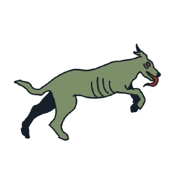

Santiago
Es el protagonista de la historia. Es un niño que vivía feliz junto a su mamá en el campo, hasta que la llegada de grupos armados destruyó su hogar y cambió su vida. Ahora debe atravesar la zona y encontrar un camino hacia un lugar seguro, evitando ser detectado por sus enemigos.

Soldados
Son los principales obstáculos que Santiago debe evitar durante su recorrido. Representan la presencia de los grupos armados que provocaron el desplazamiento de Santiago y la pérdida de su hogar. Su función dentro del juego es vigilar diferentes zonas y dificultar el avance del protagonista.

Perros de Caza
Entrenados desde pequeños para ser un arma, a pesar de no ser culpables, son utilizados de forma malevola para cazar y matar. Acompañan a los soldados y ayudan a vigilar el territorio. Pueden detectar la presencia de Santiago cuando se acerca demasiado, por lo que el jugador debe observar sus movimientos y buscar la manera de avanzar sin ser descubierto.
